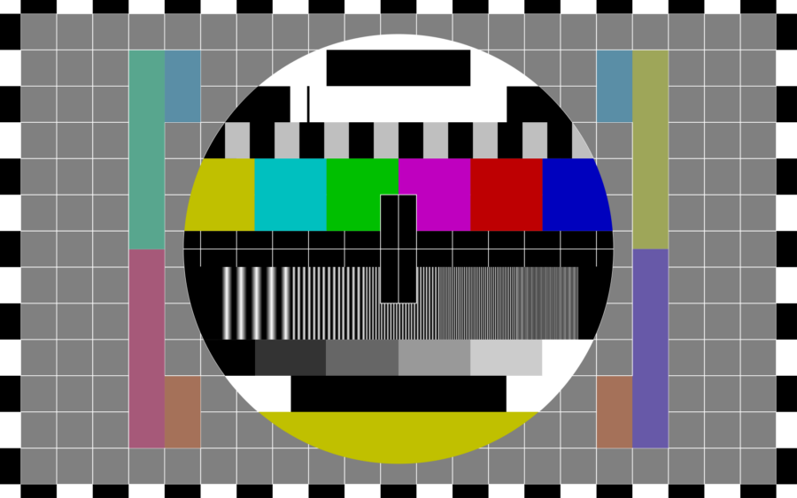

Screen Test
This series operates as an open mic for moving image. Share a video that has never screened in public before, and we will debut the work together!
Artists must be in attendance at the screening. Partial edits and work-in-progress are welcome. All artists whose work is screened are paid. We’ll share one question each artist has for the audience, and a discussion of the works will follow. Total runtime will be approximately 60-75 minutes. We are grateful to bring this series to a new location in collaboration with PO Box Collective in Rogers Park!
The first Screen Test on September 21, 2022 featured new work and work-in-progress by Crystal Beiersdorfer, Salome Chasnoff, Ben Creech, Laleh Motlagh, Klaus Pinter, and Elspread (Jane Tao X Hyeji Kang) at Berger Park Cultural Center. The second Screen Test took place on October 18, 2023 with works by Ruth K. Burke, Ali Georgescu, Tracie Kunzika, Kristin McWharter, Alan Perry, Ruby Que, Ramin Takloo-Bighash, and Oona Taper at Berger Park. The third Screen Test occurred April 5, 2025 with works by Leslie Crum, Sky Goodman and Cris War, Felicia Holman, Ro(b)//ert Lundberg, Kim Nucci and Driven Arts Collective, Mina Patel, TAITAI xTina, Tianjiao Wang, and Loraine Wible at Berger Park.
PO Box Collective endeavors to be of the community and for the community. Founded in 2019, PO Box is an all-volunteer, multiracial, multigenerational, antiracist organizing, mutual aid and art hub located in Rogers Park. PO Box brings together thousands of people every year who might otherwise never meet in our cultural programming and mutual aid projects. Through this work we redistribute wealth while learning, organizing, creating and celebrating together. For more information, visit poboxcollective.us.